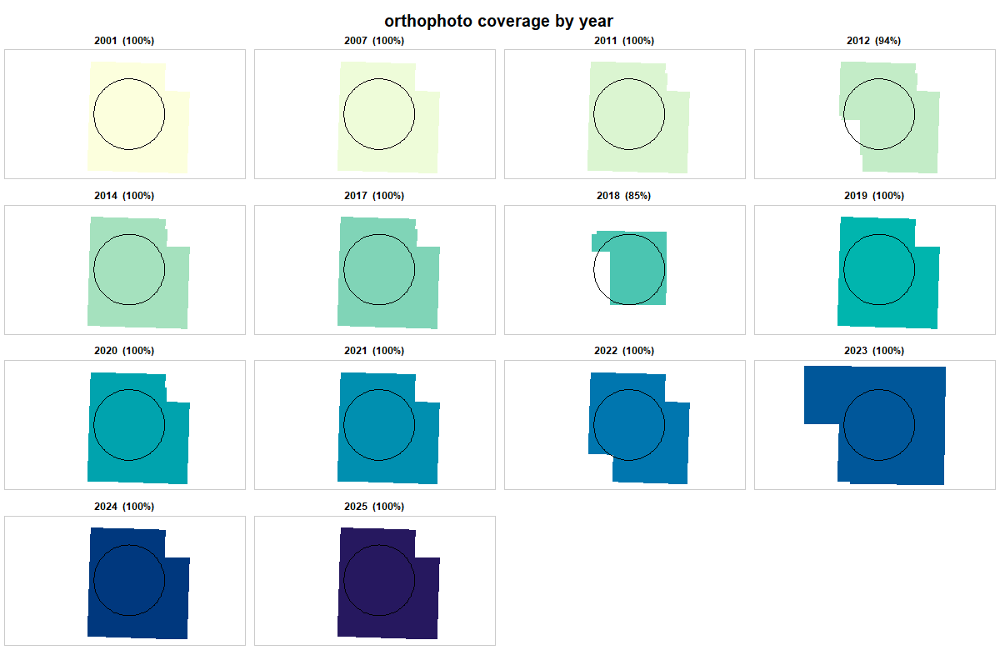
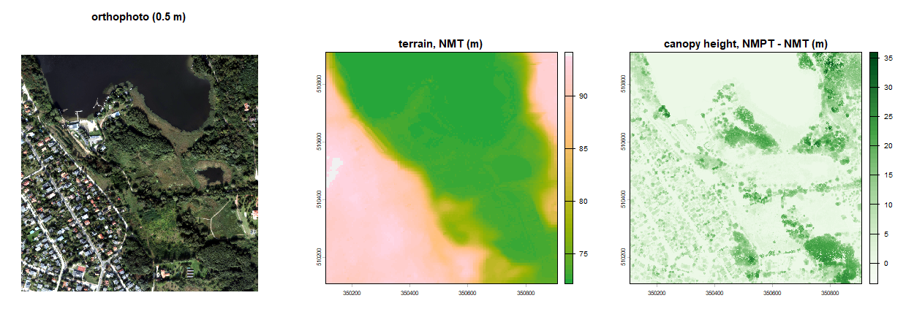
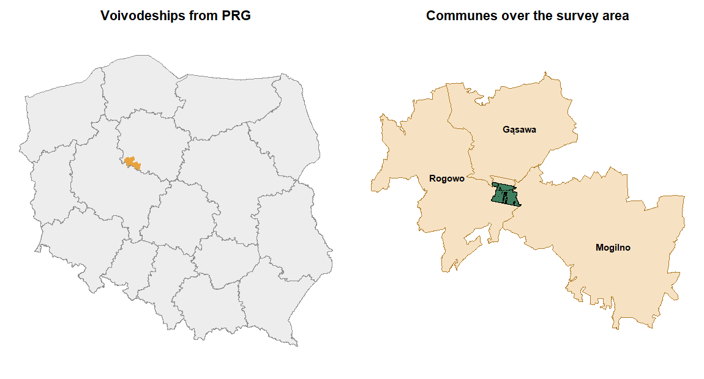

Unified access to Polish national geodata: the geodetic resource held by GUGiK (PZGiK / ISOK) and the Forest Data Bank (BDL) run by Lasy Panstwowe. One area of interest, one cache, one set of verbs.
Version 0.1.0. Both the GUGiK and the Forest Data Bank sides are working; see NEWS.md for what is in it and for the service quirks that shaped it.
Installation
# install.packages("remotes")
remotes::install_github("igorpawelec/rgeopl")terra is needed for the raster verbs – dem_get(), ortho_get(), chm_get(), tile_mosaic(), open_raster() – and only for those; the index, forest and boundary functions work without it.
Vignettes are not built by default. They are precompiled, so build_vignettes = TRUE needs pandoc but no network; if you would rather just read them, the rendered copies are in docs/.
aoi <- as_aoi(c(16.80, 52.44), buffer = 3000) # a point and a radius, or any sf object
idx <- ortho_request(aoi) # what exists here, and from which years?
coverage(idx, aoi = aoi) # which vintages actually cover the whole area?
plot_coverage(idx, aoi = aoi) # the same, as a map
library(dplyr)
idx |>
filter(year == 2023) |> # or any other filtering you like
tile_download() # fetch, cache, and remember what came from where
Read that panel as a decision: over this 6 x 6 km area the 2018 orthophoto covers only 85% and 2012 only 94%, so neither mosaics cleanly, while every other vintage does.
The forest side works the same way, off the same area of interest:
bdl_inspectorates(aoi) # forest inspectorates (nadlesnictwa)
st <- bdl_subareas(aoi) # subareas, with the forest address split into columns
bdl_compartments(aoi) # compartments (oddzialy), dissolved from the address
# which subareas sit under the most recent orthophoto?
sf::st_filter(st, sf::st_union(sf::st_geometry(subset(idx, year == max(year)))))Documentation
Three vignettes, each run against the live services and precompiled, so the numbers and figures in them are real rather than illustrative:
| Getting started | areas of interest, the indexes, coverage, downloading, the record limit |
| Forest data: the BDL side | the hierarchy, the forest address, lookups, national listings, and why an address is not a polygon |
| Case study | Bircza and Metkow: deciding whether a canopy height model is possible at all |
The docs/ copies are the ones to read on GitHub; the same content installs as vignette("getting-started") and friends. Figures live in docs/figures/ and man/figures/.
To rebuild them (needs a connection, and a VPN endpoint in Poland for the GUGiK half):
source("vignettes/precompile.R")
precompile()Rasters come ready-made from the coverage services, with no tiles to mosaic:
terrain <- open_raster(dem_get(aoi, product = "dtm", resolution = 1))
surface <- open_raster(dem_get(aoi, product = "dsm", resolution = 1))
canopy_height <- surface - terrain
And administrative boundaries are filtered by the server, not downloaded nationally and clipped:
prg_boundaries(aoi, "commune") # three communes, not the country's 2479
Why this exists
rgugik covers the GUGiK side well but stops at a wall: its index queries are capped at 1000 records, and past that it warns and hands back a truncated result. That is fatal for anything larger than a county. It also reaches only two of the six index layers the service publishes, drops the index geometry, and knows nothing about BDL.
Relation to rgugik
The output column names here deliberately match those of rgugik by Krzysztof Dyba and Jakub Nowosad, so that scripts written against it port with a rename of the function call. No code is shared.
Two exported names exist in both packages and will mask each other if both are attached: ortho_request() and tile_download(). Use rgeopl:: to disambiguate. A third pair, rgugik::DEM_request() and rgeopl::dem_request(), differs only in case, so it does not mask – but it is easy to misread.
What was measured
All of this was checked against the live services on 2026-08-27, not taken from documentation.
GUGiK index (ArcGIS REST, SkorowidzeFOTOMF/MapServer)
| Records for all of Poland, elevation index (layer 4) | 1 637 675 |
| Records for all of Poland, orthophoto index (layer 3) | 1 336 819 |
maxRecordCount |
1000, on every layer |
supportsPagination |
true |
resultOffset + resultRecordCount
|
works; pages are disjoint under orderByFields
|
resultRecordCount above 1000 |
silently clamped back to 1000 |
returnIdsOnly=true |
returns all 1 637 675 object IDs in one response |
| Truncation signal |
exceededTransferLimit, not a row count |
returnIdsOnly is the way out of the cap: one request gives the complete ID list, then attributes are fetched in chunks by objectIds (as POST, since the chunks outgrow any URL length limit). The count is known up front, so a partial result is detectable rather than silent.
Measured end to end: a 40 x 40 km area returns 19 766 index records in 20 requests, 77 s cold and 1.9 s from cache, with no duplicates. The same query through rgugik returns 1000 rows and a warning.
Layers, of which rgugik uses two:
| id | name | content |
|---|---|---|
| 0, 1, 2 |
Skor1 / Skor2 / Skor3
|
16 records each: NMT measurement data per voivodeship (XYZ / ASCII) |
| 3 | orto_skor_mv |
orthophotos |
| 4 | nmt_skor_mv |
NMT, NMPT and point clouds |
| 5 | LASData2 |
a second point-cloud index, LAS/LAZ only |
Archive depth: orthophotos 1957-2026 (49 distinct vintages), elevation data 2004-2026. The vintage is an attribute (akt_rok), so it belongs in the returned table as a column to filter on, not as a separate request.
GUGiK coverages (WCS)
Verified by downloading a real raster: 1 x 1 km at 1 m, 4 003 455 bytes of GeoTIFF in EPSG:2180.
- NMT:
.../PZGIK/NMT/GRID1/WCS/DigitalTerrainModel(ASCII grid) and.../DigitalTerrainModelFormatTIFF(GeoTIFF) - NMPT:
.../PZGIK/NMPT/GRID1/WCS/DigitalSurfaceModel - Orthophoto:
.../PZGIK/ORTO/WCS/HighResolution,StandardResolution,TrueOrto
WCS and the index answer different questions and must stay separate verbs: WCS gives the current model clipped to an AOI, with no tiles and no pagination; the index gives every vintage, tile by tile.
GUGiK vector (WFS)
Parallel index services exist alongside the ArcGIS ones, paginated the WFS way (STARTINDEX / COUNT, with resultType=hits for the total):
| service | type name | records |
|---|---|---|
NumerycznyModelTerenuEVRF2007/WFS/Skorowidze |
SkorowidzNMT2020 |
49 401 |
NumerycznyModelPokryciaTerenuEVRF2007/WFS/Skorowidze |
SkorowidzNMPT2020 |
1 850 |
DanePomiaroweLidarEVRF2007/WFS/Skorowidze |
SkorowidzDanychPomiarowychLIDAR2021 |
41 315 |
These are frozen editions (2012, 2019, 2020, 2021). The ArcGIS index carries the full run of vintages. Archive work goes through ArcGIS; a specific edition goes through WFS.
Also useful: PZGIK/PRG/WFS/AdministrativeBoundaries serves administrative boundaries with a BBOX filter, which beats downloading a national archive to clip one commune out of it.
BDL (Lasy Panstwowe)
| OGC API Features |
https://ogcapi.bdl.lasy.gov.pl - bbox, limit, offset, numberMatched, next links |
| WFS 2.0 (GeoServer) | https://wfs.bdl.lasy.gov.pl/geoserver/BDL/ows |
CountDefault |
1 000 000 |
ImplementsResultPaging |
true |
| Collections |
rdlp, nadlesnictwa, lesnictwa, plus 17 x RDLP_*_wydzielenia
|
| Subareas in one RDLP (Poznan) | 166 013 |
There is no record cap to work around here.
Two things that shape the client:
-
No subarea compartments (
oddzialy) as vectors. They exist only in WMS.bdl_compartments()derives them by dissolving subareas on the compartment field ofadr_for, which is also self-consistent by construction. -
No unit names on the subareas. They carry codes only, so
bdl_subareas()joins the directorate, inspectorate and range names from the small code tables, cached for a week. -
No archive, and no vintage field either. The service returns the current state only.
a_yearis the edition stamp of the BDL release, not a plan revision year: measured 2026 for all 429 forest inspectorates and for every subarea sampled across three regional directorates. A time series has to be built from your own snapshots. This is the one place where BDL is strictly poorer than GUGiK, where every vintage stays available and queryable.
Design
as_aoi() sf / sfc / terra / bbox / point / matrix / WKT / file
| -> one internal representation, CRS inferred or demanded
+-- aoi_bbox() -> the box a client needs, in the CRS it needs
+-- aoi_geom()
cache_dir() meta/ index responses, time-to-live, expire on their own
files/ downloads, permanent, recorded in a manifest
gp_json/gp_xml retries, timeouts, POST for long queries,
gp_download() classed errors, cache-aware
arcgis_query() count -> ids -> chunked POST (GUGiK indexes)
oapif_items() bbox -> pages by explicit offset (BDL collections)Four rules the clients follow:
- One pagination helper per protocol. The clients stay thin.
-
*_request()returns index geometry, so coverage can be plotted and gaps seen rather than guessed at. - The cache is addressed by URL hash, and the file name keeps its hash prefix: the same tile name recurs across vintages and would otherwise collide.
- No “fetch everything” mode. Input is an AOI or a point; asking what exists is always a separate step from downloading it.
Requirements
R >= 4.1, with sf, httr2, jsonlite, rlang, cli and xml2. terra is needed for the raster verbs – dem_get(), ortho_get(), chm_get(), tile_mosaic(), open_raster() – and only for those.
The GUGiK services refuse connections from outside Poland. BDL does not. Working on the GUGiK side from abroad needs a VPN endpoint in Poland; the error message says so when a request fails against those hosts.
Data licensing
Everything this package downloads is published free of charge.
On the GUGiK side, orthophotos, the terrain and surface models, the LiDAR measurement data and the border register are all on the list of materials made available without a request under art. 40a(2) of the Geodetic and Cartographic Law. That is every dataset this package touches; none of them needs an application, a fee or a licence.
Be careful with older pages: the registration-service terms still describe spatial data as chargeable and limit use to non-commercial personal purposes, citing the law as consolidated in 2010 – that is, before the 2020 amendment that opened these datasets.
The Forest Data Bank is free too, under the public information and environmental information acts. Its terms ask anyone re-using the data to state the source and when the information was created and obtained, and to pass it on in the form it was received. BDL map data is explicitly indicative: it is not an official record and cannot found an administrative act.
This package downloads; it does not redistribute. The attribution is owed by whoever publishes results from the data.
None of the above is legal advice.